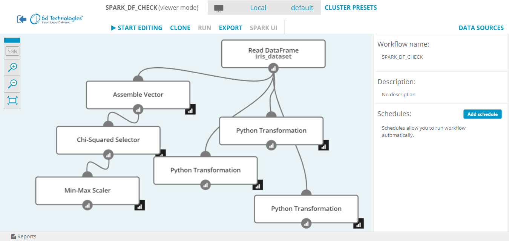

Analytical Engine Overview
Table of Contents
Introduction
Analytical Engine is an open-source visual framework allowing you to create
 applications in a fast, simple and interactive way. Creating Spark applications
with Analytical Engine is as easy as dragging and dropping operation on the canvas, all while
connected to any Spark Cluster (YARN, Mesos, Standalone) or to a bundled local Spark.
applications in a fast, simple and interactive way. Creating Spark applications
with Analytical Engine is as easy as dragging and dropping operation on the canvas, all while
connected to any Spark Cluster (YARN, Mesos, Standalone) or to a bundled local Spark.
 Analytical Engine’s interface
A Glimpse of Analytical Engine’s Features
- Create Apache Spark applications in a visual way using a web-based editor.
- Connect to any cluster (YARN, Mesos, Spark Standalone) or use the bundled local Spark.
- Use the Analytical Engine Library to easily work with local files.
- Use Spark’s machine learning algorithms.
- Define custom operations with Python or R.
- Explore data with a Jupyter notebook using Python or R from within Analytical Engine, sharing the same Spark context.
- Export workflows and run them as batch Apache Spark applications using the Batch Workflow Executor.
About the Product
Using Analytical Engine, you can create complex dataflows for ETL (Extract, Transform and Load) and machine learning without knowing Spark’s internals. Analytical Engine provides tools to tackle real world Big Data problems while letting the user experience a very gentle learning curve. Analytical Engine takes care of many complicated concepts and presents a simple, clean interface.
Analytical Engine emphasizes a visual approach to programming. This results in user’s applications being extremely readable: the logic driving the entire program is visible at first glance.
What’s important, while promoting a code-free working style, Analytical Engine does not limit users to a predefined set of actions. Whenever the user encounters a necessity to include a non-standard action in their application - something that is not covered by Analytical Engine’s palette of operations - they can write their own transformations in Python and R.
Analytical Engine offers a web-based interface that presents a Spark application as a graph of operations - a workflow. A typical Analytical Engine session consists of three alternating phases: adding operations to the workflow, executing the part of it that’s already been created and exploring the results of the execution. This establishes an interactive process during which the user is able to track what happens at each step.
Finally, after the workflow has been constructed, it can be exported and deployed as a standalone Spark application on production clusters.